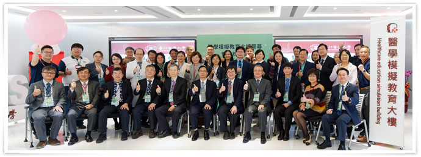
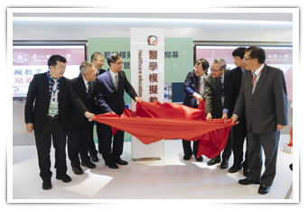
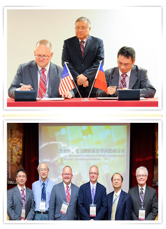

Milestones
Opening Ceremony and Plaque Unveiling Tea Reception for the Medical Simulation Education Building


Since 2013, Taipei Medical University has established the "Center for Education in Medical Simulation," abbreviated as CEMS. In May 2017, it relocated to the Da'an Campus. We have created an innovative teaching simulation environment, transforming the Center from CEMS 1.0 to CEMS 2.0. Today, in 2023, after a decade of refinement, we unveil a brand-new Medical Simulation Education Building. This opening marks Taipei Medical University's ongoing innovation in clinical education, moving beyond traditional physical simulations centered around models, into the new era of Virtual Reality (VR) teaching environments. The new CEMS 3.0 will continue to strive for excellence in medical education.
Thanks Wang Wang Foundation Foundation donations for three consecutive years

Thank Wang Weiwei Foundation Foundation donated this center for three consecutive years, to develop the school simulation teaching, to improve the ability of simulated teaching practice, shorten the gap between teaching theory and practice, by way of simulation to enable students to use what they learned in clinical practice and Refinement of practical skills.
Medical simulation education center inaugurated

The Clinical Skills Center was expanded to "Medical Simulated Education Center" from 102 semesters and was unveiled at the opening ceremony on November 22, 2002. It was held on the day of the exposition that "The Second Asia Pacific Medical Simulation Conference Learning Experience" Learning experience sharing, strengthen the school medical simulation education.
The Center, led by Director Wu Jianzhi and Lin Zhewei CEO unit colleague - Lin Xiaoqiao and Cai Yizhi for the school integration of simulation education resources to effective use of existing space and hardware facilities as the primary goal, is committed to nurturing simulated medical teachers, research and development applicable to the Department of The teaching case, will be introduced to the normalization of simulated medicine teaching, and then for the simulation of inter-school medical seminars, to share our simulation education methods and results and to achieve industry-academia cooperation, innovative research and development of simulation education equipment.
Our university is a medical university. Most students have to deal directly with the workplace that is directly related to the patient's life. To make proper use of the acquired knowledge, skills and attitudes in schools before graduation, in clinical internship and even in future medical practice, we must use Simulate teaching system, nurture quality clinical teachers and integrate students in clinical training courses to enhance the effectiveness of clinical teaching. Simulated teaching is to introduce standardized patients, virtual patients or simulated mock-ups by means of clinical situation simulation so that students can train students to learn through simulated exercises in the classroom before entering the hospital to actually contact the patients Face the patient, the ability to deal with the disease.
Thank Wang Foundation donation

Thanks Wang Wang Foundation for English Education Foundation
Donated NT $ 1,000,000 to Taipei Medical University Medical Simulation Education Center
Wise thinking Qi

From June 22 to June 23, 2002, we signed the academic cooperation with the WISER simulation teaching center at the University of Pittsburgh in the United States. We also organized the International Symposium on Core Competencies and Simulations for Medical Care. It is an excellent occasion to invite standardized patients, virtual patients and senior people in simulated education International Scholar in the Sims: Prof. Paul Phraumpus, President of the World Simulated Medical Association, Founder and Lifelong Professor, University of Southern Illinois Institute of Technology Prof. Hurley Myers, best known textbook author for standardized patient and Physical Examination Prof. Mark Swartz, a still-growing professor, came to Taiwan for lectures and invited three international speakers to become visiting professors at Taipei Medical University.